Fellisha L. Desmarais
Bibliognost in the craft of Library Science and deviser of visual stimulation.
Bibliognost in the craft of Library Science and deviser of visual stimulation.
Book structures constructed by hand.

 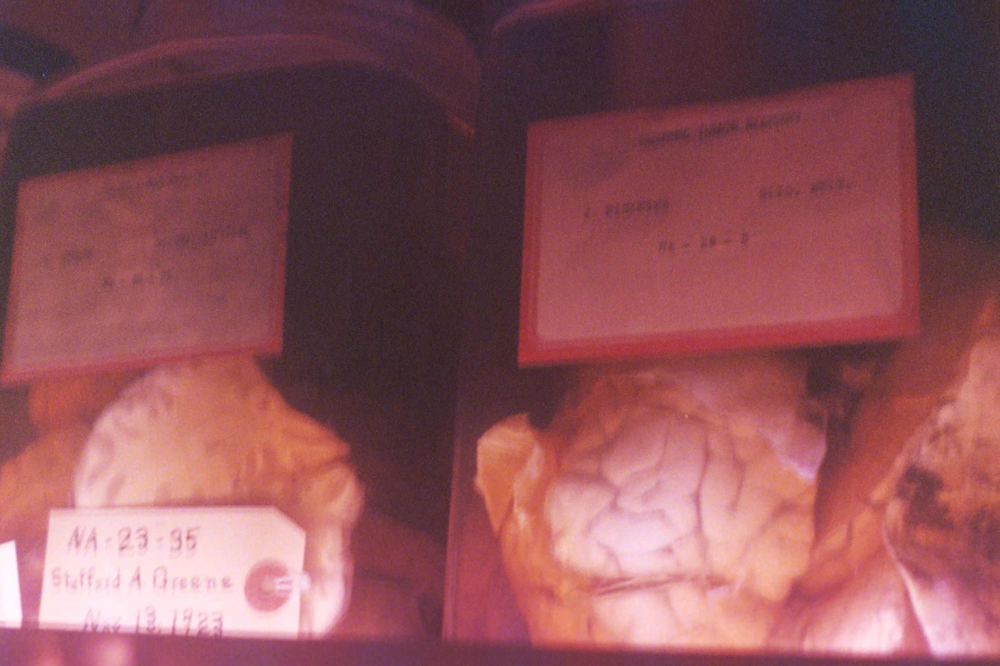
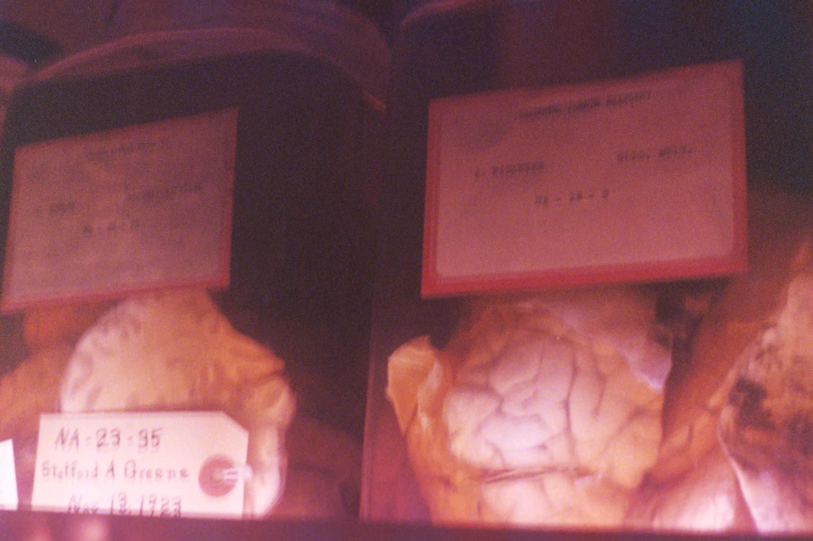
35mm momentos. Film photographs born into life by chemical processes.
 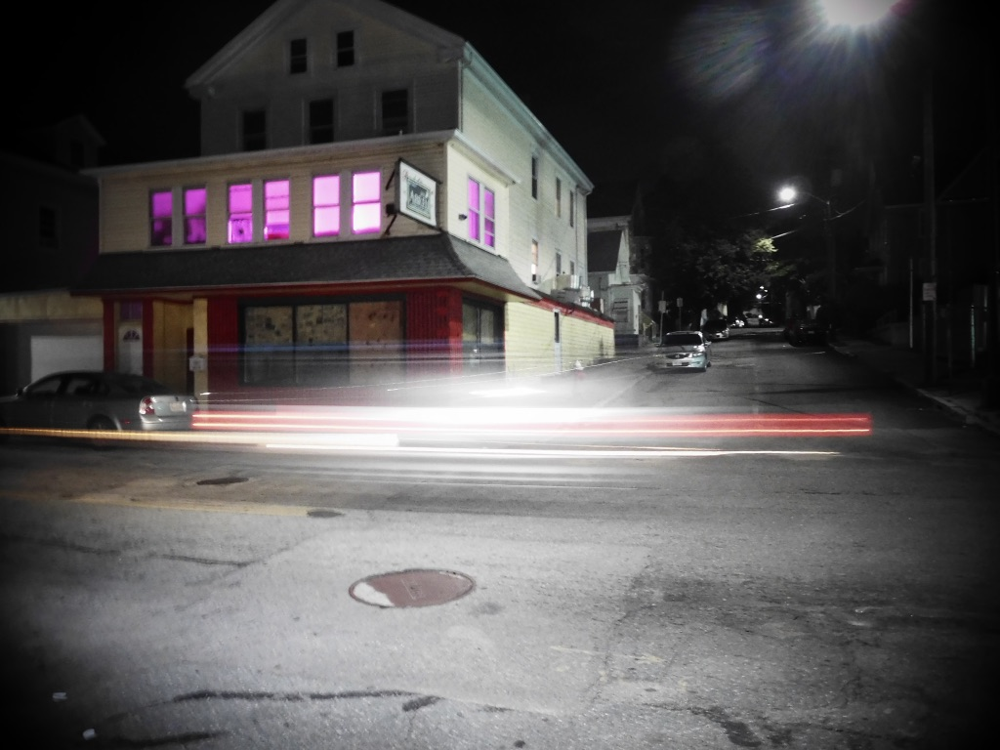
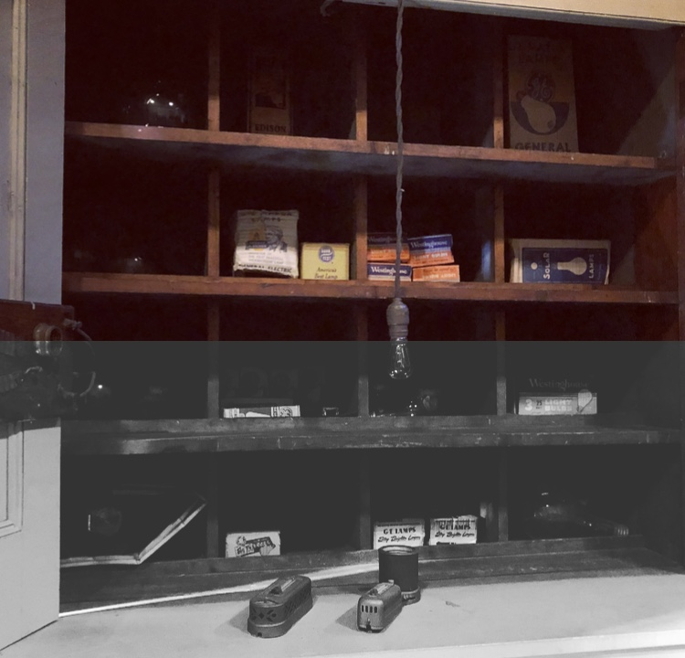
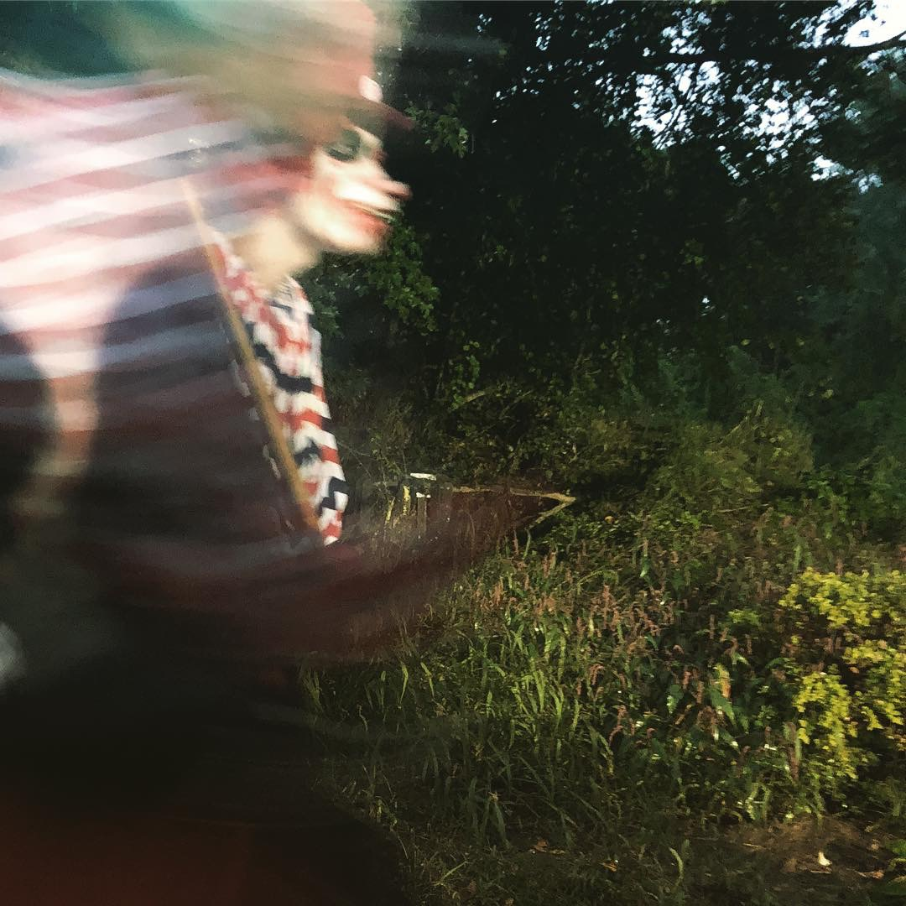
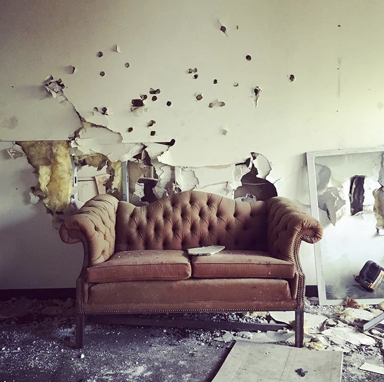
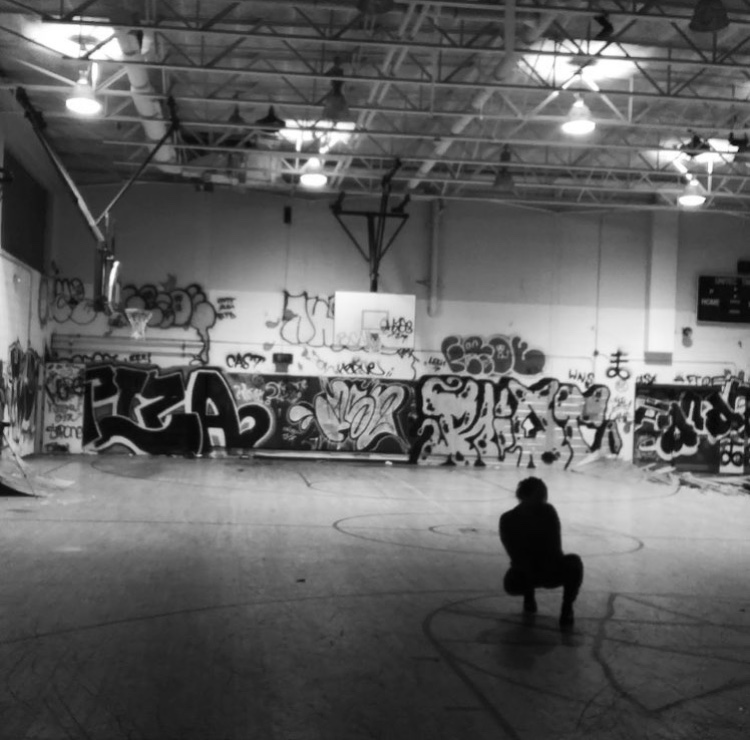
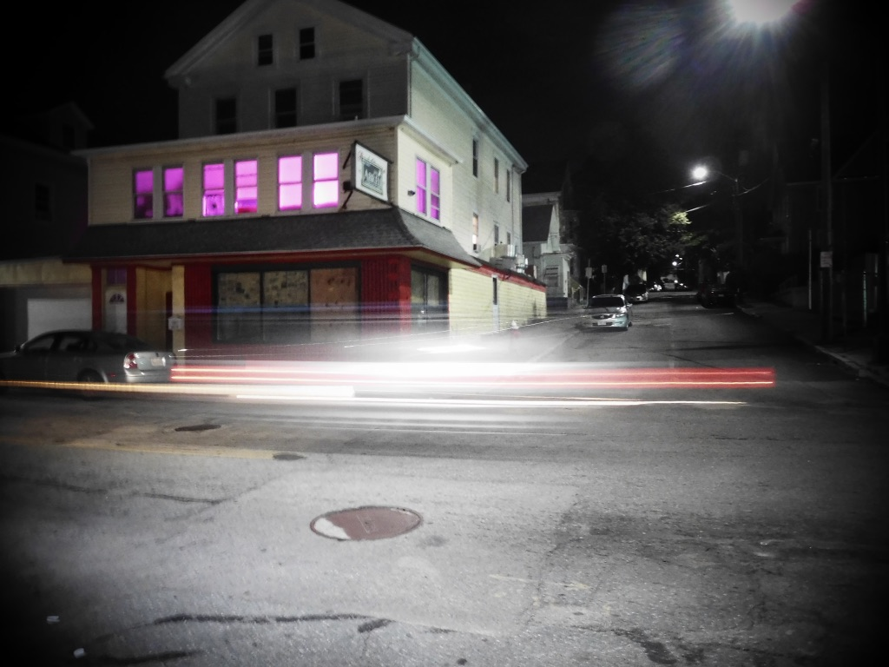
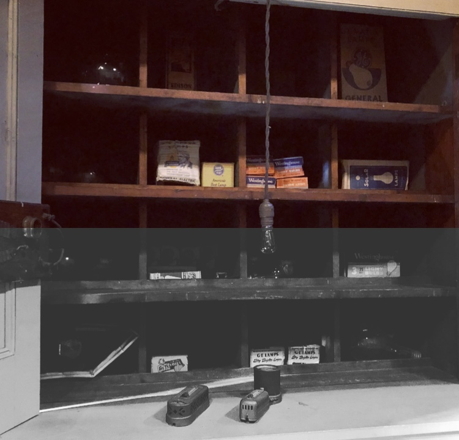
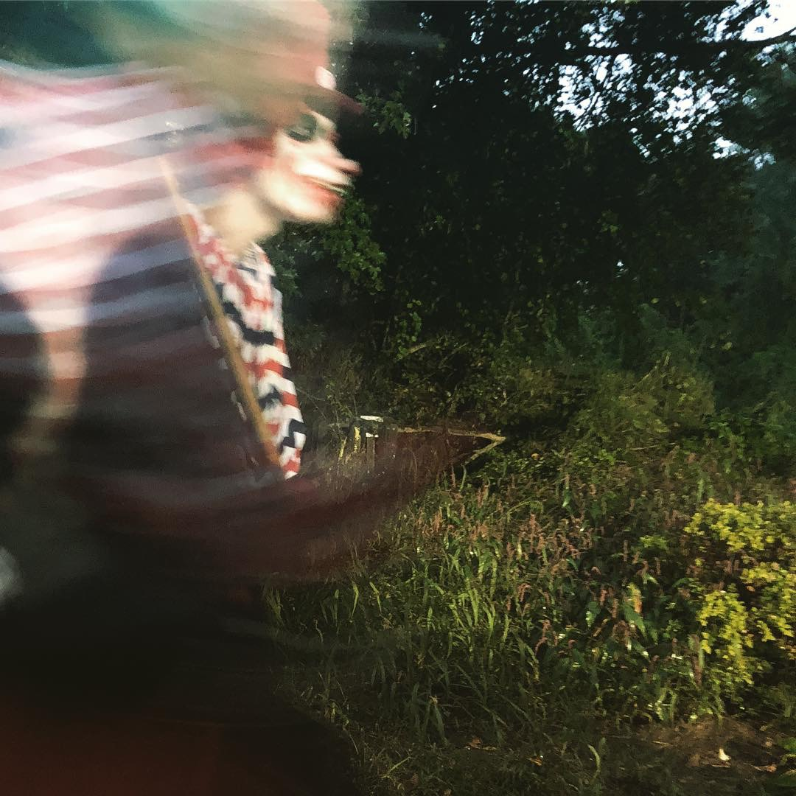
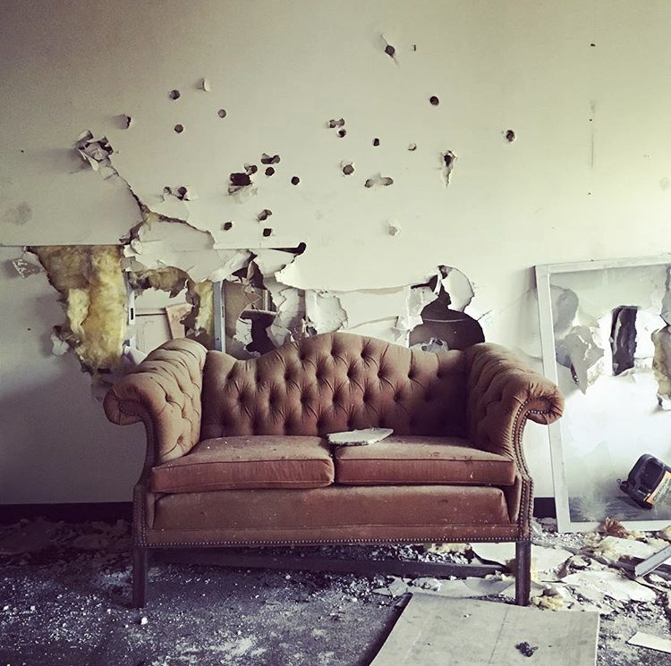
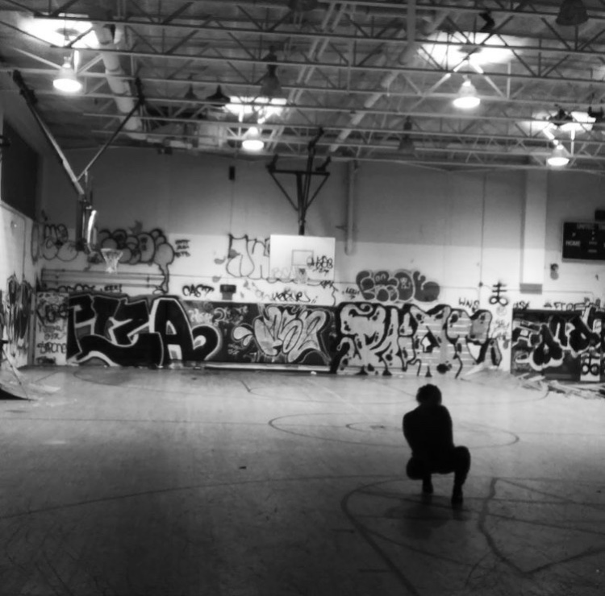
Collected memories. A study of the camera and phone as our 21st century external harddrive.
Data from a week in my life, visually translated.
Original monoprint. Taken into the digital realm as a versatile personal character.
Invention and development of the visual brand identity | screen layouts of NO VACANCY, a platform which urban explorers share destinations and meet like-minded individuals.
Portrait of the Russian white swan, etched in limestone with tusche.


Pressure prints set over textures occasionally mixed with lithographic elements.